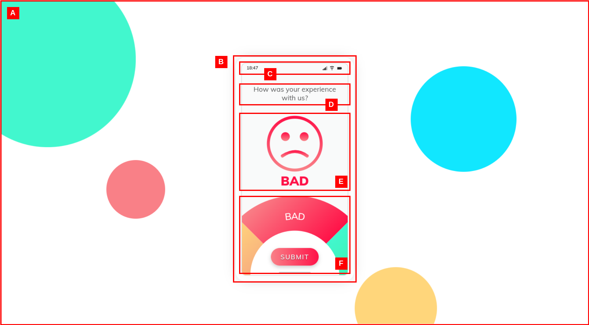

Instructions for Senior UI/UX Engineer Technical Assessment
GoalRecreate the following review page using the provided data and images.
ScoreOut of 50 - for code quality, fidelity, animations, a few questions and overall design.
Maximum Time3 hours

Image credits to MindInventory Graphics
Project Details
Description
- You'll be designing a simple review page as depicted on the image below. The image has been labelled from
A
through F to help you understand the key components you need to build to
complete this assessment:
-

- Labelled A A background with a bubble pattern, with at least 4 circles of different radii and color.
- Labelled B A section depicted like a phone, with rounded edges and a light drop shadow.
- Labelled C A status bar with the current time (using JavaScript), cellular signal strength bars, WiFi signal strength bars and a battery display.
- Labelled D A textbox with the message "How was your experience with us".
- Labelled E An SVG-based feedback face, that morphs into four possible faces based on the selected rating (i.e. BAD, GOOD, UHG and OK) (see the image at the top of this page for reference to the animation)
- Labelled E An clickable wheel that allows the user to select their rating, which causes the wheel to spin on its origin and morph the feedback face SVG into the different emotions. This should also cause the respective colors associated with each rating to change.
- Labelled F A submit button with the text "Submit" - whose color should change smoothly the respective rating.
- You will only have to implement the aforementioned animation and transition functionality (see the image at the top of this page for reference) as a single static webpage. No logic or submission handling is required.
Tech Stack
- LanguagesHTML, CSS and JavaScript & jQuery (feel free to use additional animation libraries).
- Version ControlGit and Github is used to host this project's respository and for submitting your work.
- Since this assessment will primarily use Git & GitHub, you will need a GitHub account and some experience working with the Git CLI.
Task 1 - Setting up your development environment
- Fork this GitHub respository onto your personal GitHub account and clone it to your machine - this folder contains the skeleton for the project you will be working on. The time allocation (max. 3 hours) will start from the point you fork this repository.
- Navigate to this repo's folder from your machine. Inside this folder you see a single folder named
src/. This is where you will spend your time writing designing and code. You can ignore the folder named/instructions. - Open the repo's folder using your favorite text editor / IDE.
- Use the provided:
index.htmlfile for adding your structural and semantic elements.styles.cssfile for adding your styles (you may use Sass instead).script.jsfile for adding any associated JavaScript / jQuery code.ANSWERS.mdfile to answer a few UI/UX questions found in Task 3.
- You may add additional files to this folder depending on any additional frameworks you need to complete the assessment. Task 1 is now complete. You may now move on to Task 2.
Task 2 - Completing the review page
40 marks- Open the
index.htmlfile and complete the structural and semantic elements for the review page as described in the previous section. - Open the
styles.cssfile and complete the styles for the review page as described in the previous section. Feel free to use any additional frameworks or libraries to help you with this task. - Open the
script.jsfile and complete the JavaScript / jQuery code for the review page as described in the previous section. Feel free to use any additional frameworks or libraries to help you with this task.
Note that our focus here is your animation and design skills - hence, there's no need to be restricted to the provided design, as long as the required functionality has been met.
Task 2 is now complete. Commit and push your work to your personal forked repository. You may now move on to Task 3.Task 3 - Answer a few UI/UX questions
10 marks- Open
ANSWERS.mdand answer the following questions regarding UI/UX:- Write a small description about your favorite piece of UI/UX design (maybe even provide a link to it for us to check out!)
- As a UI/UX designer, how would you respond to negative feedback about your designs?
- What do you think of the review page you just designed? Is it something you like, or is there anything you would change?
Congratulations on completing this assessment! You may now submit a pull request (ensuring that all local changes have been pushed) to the main repository from your forked repository to confirm your submission.
Make sure to include your name in the pull request message, along with any additional details in a README.md if you wish to explain / comment on any of the solutions for the previous tasks.